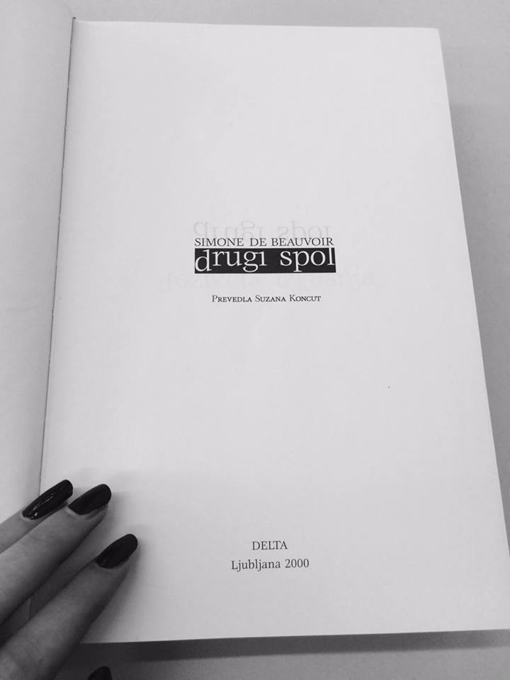

Volilna pravica se je ženskam po letu 1945 zagotavljala po vsem svetu. Leta 1948 se je besedna zveza "rights of men" spremenila v "human rights" in tako je bila pridobljena nova pravica, in sicer pravica do nediskriminacije na podlagi spola.
Drugi spol, objavljen v francoščini, zastavi feministični eksistencializem, ki narekuje moralno revolucijo. V njem je Simone de Beauvoir zapisala, da so ženske enako sposobne odločanja kot moški. Drugi spol predstavlja spodbudo ženskam, saj je po tridesetih letih bila prva taka literatura, ki opisuje sposobnost in enakopravnosti žensk.
Organizacija Združenih narodov je leto 1975 razglasilo kot Mednarodno leto žensk, s katerim je opozorila na vprašanje ženske enakopravnosti, ki še ni dosežena povsod po svetu.
